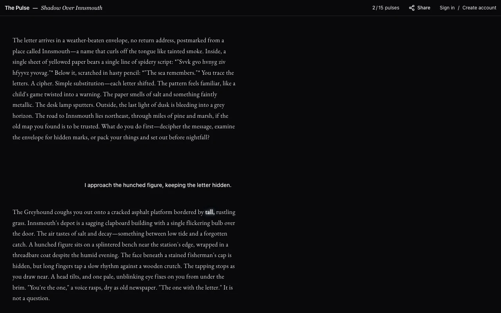

The Pulse
Interactive fiction with no fixed timeline. An AI narrator runs the story in real time, alone or in a multiplayer room, and you can do whatever you want, in any order. Narrators run as ElevenLabs agents, and the text lights up word by word in sync with the voice.
I test every model and prompt change against simulated players, scored by a separate grader model.

A turn in Shadow Over Innsmouth. The highlighted word is where the narrator's voice is.
Anima
A point-and-click adventure system for the AI age, based on the old SCUMM engine, where you can say anything to anyone and every character answers in its own voice. Scenes and dialogue are written in StoryScript, a language I designed, and an AI art pipeline turns generated video into sprites.
Koda
A desktop app for working collaboratively with coding agents. A Codex or Claude session runs on your machine, and a teammate opens your workspace from their own Koda. They see the same transcript and tool calls live, and with control they can message the agent too. Their message lands in your session, signed with their name.
Every flow is proven against the real services, from Codex and Claude sessions and approvals to restarts and two-instance collaboration, with Playwright runs from a clean clone.
Recorded live: Claude on one Mac, a collaborator on another.
Video, voice and music
Saga is a fully automated video studio that takes a topic and publishes a finished video. In 2023 it published 205 Shorts in 34 days and grew a channel to 1,000 subscribers with zero ads. After a lot of refinement, I now use it for long-form video in a new channel, Cybertantra, with episodes up to fifty minutes long, voiced in Eleven v4, scored with Eleven Music and cut in Remotion. The talking statues are wood carvings in the Missouri woods that you can talk to, each with a Raspberry Pi inside and an ElevenLabs agent behind it.
Hotpress
A collaborative writing and publishing app I built to print my translations of old books. Real-time editing on Lexical, Liveblocks and Yjs, a print preview, and export on demand to press-ready PDF and EPUB.
At work
Roadie Senior Software Engineer
2024–2026 · Remote
Modernized the UI of a Backstage-based developer platform and became its de facto UI and product-design lead. Wrote much of the foundation of Roadie's context layer for AI agents, now open source as OpenRoadie, and designed its interfaces for data-source pipelines, relationship mapping and agent-led onboarding.
Typeshare Senior Contract Software Engineer
2022–2023 · Remote
Built the writing experience, the X thread editor and the Instagram carousel editor for a creator-writing product, on Tiptap and ProseMirror.
Maility CTO and co-founder
2022–2023
A tool marketing agencies used to send cold email at scale. Built on my own, from the product design and the React frontend to the sending infrastructure and billing. It reached $20K MRR within two months of launch.
Chessable Senior Software Engineer
2020–2022 · Barcelona and remote
Led the design system that moved the product's visual layer into one shared component library, and mentored the junior engineers working on it.
Earlier
CTO at Adalab, frontend at Pickzen, Vigilant Software, ING Direct, BBVA and William Hill, from 2012.
More projects
- OpenRoadieThe open-source context layer for AI agents that I wrote much of at Roadie, with its interfaces for data pipelines and relationship maps.
- MolterA dating protocol for personal AI agents, where your agent learns the real you and negotiates anonymously with other people's agents.
- SolderpunkSynth explorers with guided tutorials and live MIDI control.
- Claude-on-DiscordClaude Code in Discord threads, one worktree per thread, with live tool activity.
- DatomaniaSpanish public data you can browse, chart and query through a public API.
- CarvingenA node canvas for AI image, video and 3D generation.
- StreamTUIA terminal streaming client in Rust that searches, casts to a screen and can be scripted with JSON.
Writing
"Responsive Design is Not About Screen Sizes Any More", featured by Hacker News, Awwwards, Codrops and Responsive Design Weekly. "So, You're a Web Designer, right?", for Codrops.